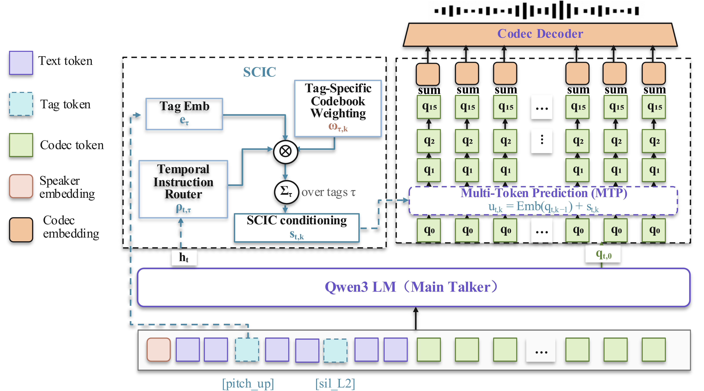

SCIC: Scope- and Codebook-Aware Instruction Conditioning for Speaker-Adapted Expressive TTS
Longyu Lu, Zongwei Du, Mengtao Xing, Zhuoqun Liu, Zifan Guan, Meiguang Jin*, Junfeng Ma
TaoLive-AIGC Team, Taobao & Tmall Group of Alibaba
* Corresponding author
Abstract
Long-form live-streaming TTS requires context-dependent prosody and paragraph-level coherence. However, many existing instruction-based TTS systems use global or uniform conditions, providing limited explicit control over clause-level relative prosodic changes. We introduce Speaker-Relative Inline Prosody Control, where each Pitch, Energy, or Speed instruction targets a clause relative to the preceding clause from the same speaker, while Pause uses an absolute duration interval. In codec-based TTS, Speed and Pause affect sequence length, whereas Pitch and Energy rely on residual codebooks. By analyzing Qwen3-TTS RVQ codebooks, we find that Energy concentrates in early residual codebooks, whereas Pitch accumulates across a deeper prefix. We therefore propose Scope- and Codebook-Aware Instruction Conditioning (SCIC), combining a Temporal Instruction Router for frame-level tag activation with Tag-Specific Codebook Weighting over residual codebooks. SCIC improves speaker-relative Pitch and Energy control over standard instruction fine-tuning using text-token tags. We further apply multi-reward GDPO post-training to jointly optimize control and quality, improving control accuracy while preserving CER and speaker similarity. In long-form synthesis, SCIC produces a more distinct paragraph-level expressive hierarchy than speaker-adapted SFT without instructions.
Architecture

SCIC consists of four main components:
Main Talker — the autoregressive backbone that predicts the first codebook q0, advances the acoustic-frame sequence, and provides the frame-level hidden state ht to downstream components.
Temporal Instruction Router — predicts a frame-level activation strength for each inline Pitch/Energy tag from ht, determining when and how strongly an instruction is active, so that control applies only to the tagged clause rather than the whole utterance.
Tag-Specific Codebook Weighting — assigns each tag a learned weight on every residual codebook q1–q15, determining where the instruction signal is injected along the codebook axis; the Router output and codebook weight jointly scale the tag embedding to form the conditioning signal st,k.
MTP (Multi-Token Prediction) — predicts the residual codebooks q1–q15 within each frame, taking the conditioned inputs ut,k into which the scaled tag embedding is passed.
Single-Instruction Samples
Each sample contains one inline instruction tag embedded in the text. The tag controls the following clause relative to the preceding clause.
Multi-Instruction Samples
Long-form samples with multiple inline tags, combining Pitch, Energy, Speed, and Pause instructions within a single paragraph.